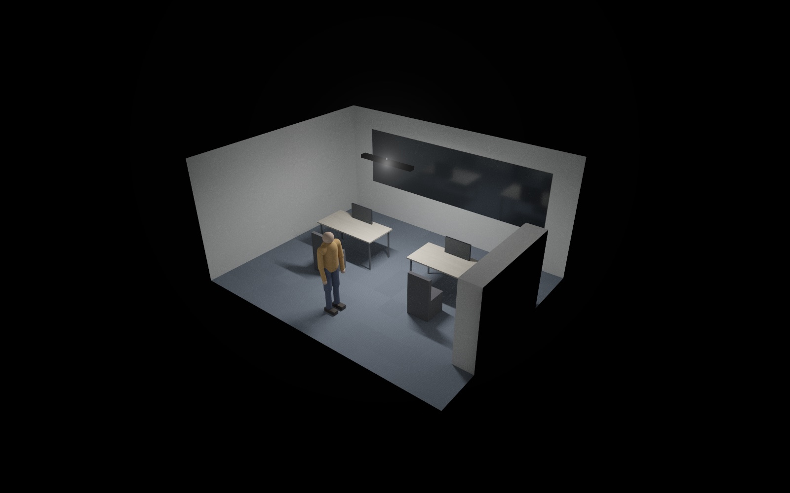
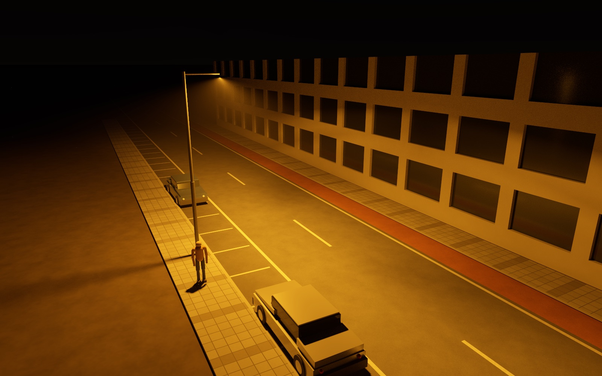
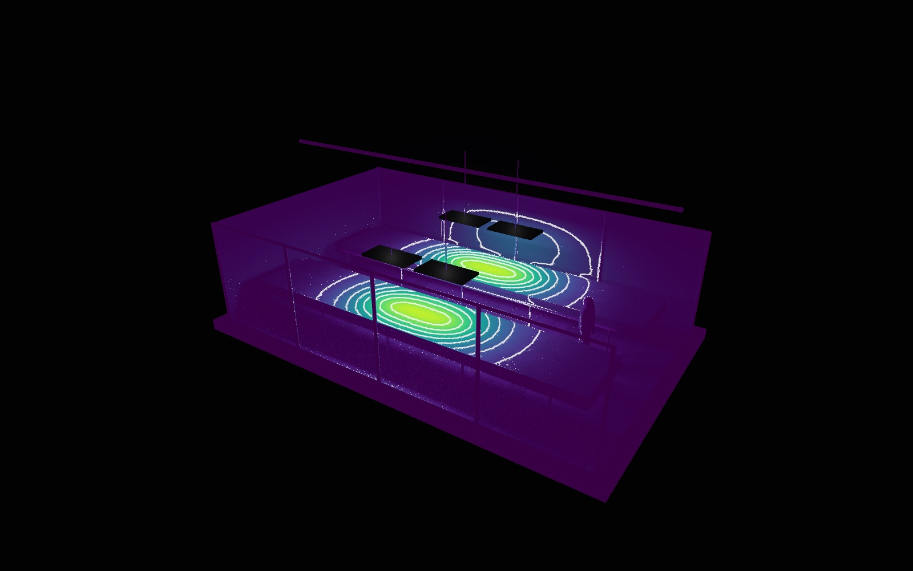
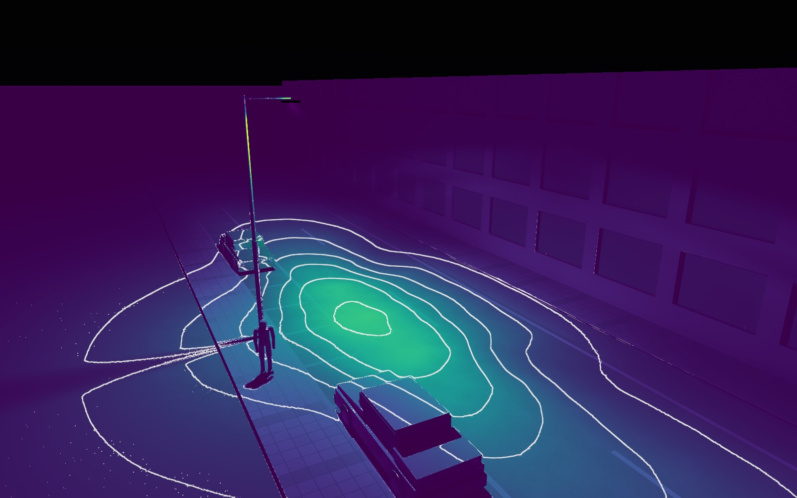
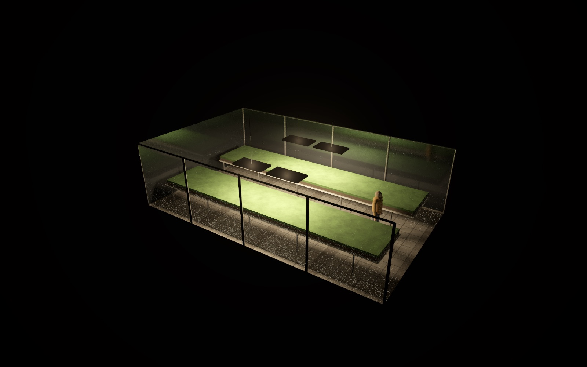
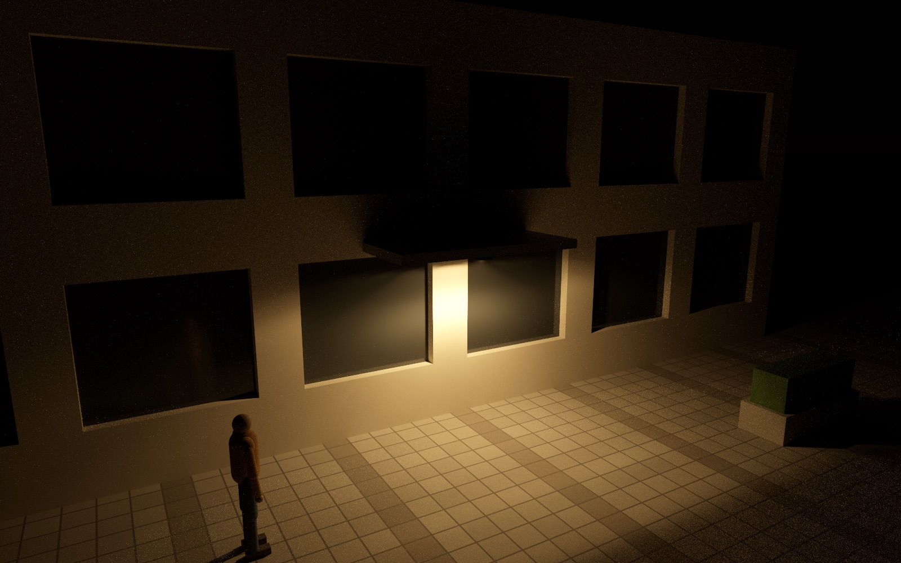
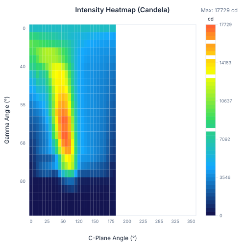
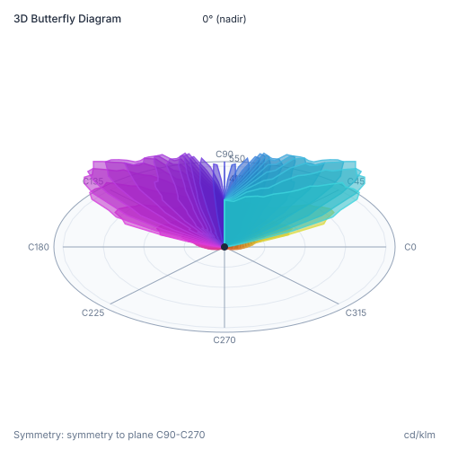
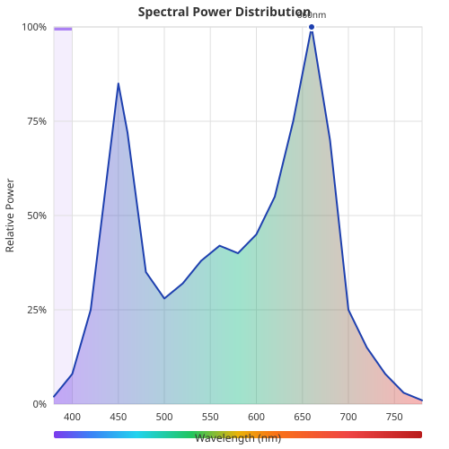
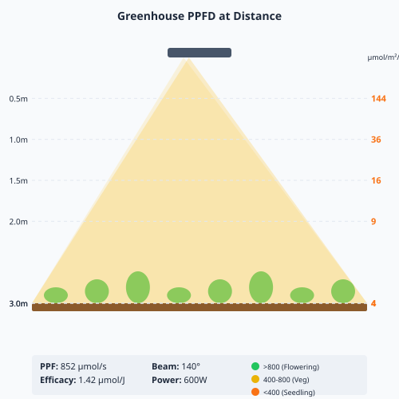

Drop an LDT, IES, ATLA or GLDF file. Candelabra draws every diagram, checks the standards, and lights an office, a street or a greenhouse with a path tracer that samples the real intensity table. Free and open source. Nothing leaves your machine.
Runs on WebGPU in Chrome, Edge, Safari and Firefox. Eight languages. No account, no upload.




Office · photo view
Six views, one tracer
The same accumulation shows the photo the eye would see, the illuminance in false colour with isolux lines, and the measurement grids of EN 12464-1 and EN 13201-3 with Em, Emin and uniformity per grid. In the greenhouse the values are PPFD and daily light integral. Mounting height, tilt, spacing and the number of luminaires are sliders.
PhotoFilmic exposure, haze and veiling glare; facade, cycle lane, parked cars for scale.IlluminanceLux as colour on every surface, with isolux lines every few lux.GridStandard measurement points; workplane 132 lx average, Uo 0.34 for this sample.

GreenhouseA glasshouse with crop benches under horticultural LEDs; the body of the luminaire comes from its GLDF when there is one.PPFD on the canopyThe same scene in µmol/m²/s with isolines, from the luminaire's own spectrum, plus the daily light integral per bench.

FacadeA projector grazing a building front: window reveals, spill light and a grid on the wall.
Three things no other browser tool does
Any lighting format in, any other out
Every file is parsed into one lossless model, so what you open in one format you can save in another. Convert a manufacturer's IES to EULUMDAT, pack photometry with a spectrum into ATLA, or pull the LDT out of a GLDF container, all without leaving the page. To go the other way, our sister site gldf.icu builds a complete GLDF container around your photometry, interactively.
Drop a second file next to the first: diagrams side by side with linked C-plane sliders, a similarity score, and a table of every metric with its delta in percent. Export the comparison as a PDF.
Place several luminaires along a road and let Candelabra check the result against the European EN 13201, the American ANSI/IES RP-8, the Chinese CJJ 45 and the dark-sky Model Lighting Ordinance, with the required classes and the pass or fail per criterion.
Did you know? The C0 plane is rotated between IES and LDT
The two AEC MAXWELL samples are the same luminaire, once as a CIE-style file and once as an IESNA file. They look identical until you compare them: the C0 plane sits 90° apart, because the two standards define the reference plane differently. The isocandela view shows it at a glance. Compare the pair in the isocandela view · as polar curves · as heatmaps.
Isocandela plot of the IESNA file: the same luminaire, turned by 90°
Spectrum Lab: what if every photon carried its colour?
Photometry is already weighted for the daytime eye: lumens and lux tell you nothing about the night, the body clock or the sky. The Spectrum Lab traces the luminaire photon by photon, each one with a wavelength drawn from a measured spectrum, and does the weighting at the detector instead. One trace answers four questions at once.
What the daytime eye seesIlluminance, colour temperature, and how the colour shifts with the viewing angle, straight from the traced photons.
What the night eye seesS/P ratio and mesopic road luminance: the same lux can look bright or dim at night depending on the spectrum.
What the body clock seesMelanopic DER, the circadian stimulus of the light, from sleep-friendly to alerting.
What the sky seesUpward light, its colour temperature and blue share, and a dark-sky check against the 3000 K limit.
Sources: measured vendor spectra from Yuji, Luxeon and Signify, or the editor's own luminaire. The sibling Daylight & Sky tab runs the same engine for sun, moon and sky at any place and time.
Candelabra is not a replacement for a full project calculation. It is the fastest place to look at, check, understand and show a luminaire, and a growing set of tools around it.
Lighting designers and architects
Check a luminaire before it goes into a project, or show a client what it does.


📈
Every diagramPolar, cartesian, 3D butterfly, heatmap, cone, isolux, isocandela, beam angles.
💡
Light scenePath-traced office, street, parking lot or facade with lux grids.
Spectra, PPFD and the sky: the parts of light that photometry alone does not show.


🌈
Spectral labCCT, CRI, TM-30, melanopic metrics and PPFD from SPD data; digitize a chart image.
🌱
GreenhouseA traced glasshouse with crop benches: PPFD and daily light integral on the canopy from the luminaire's own spectrum, plus the daylight and glazing demo.
☀️
Daylight skySun position, clear and overcast sky, daylight factors anywhere, any date.
🌌
SkyglowNight-sky brightness and light pollution with real star data.
Teachers, students and developers
Understand photometry by playing with it, or build on the same Rust crates.
🎓
Lighting quiz175 questions on photometry and design in eight languages.
🔬
Virtual goniophotometerMonte Carlo measurement of a lamp with covers and reflectors; an LDT from a design.
✨
TM-25 ray filesNear-field LED ray sets to far-field solids, spectra and LDT; also at tm25.eu, with the format handling confirmed by Julius Muschaweck.
🦀
Open sourceeulumdat-rs on crates.io: parser, diagrams, calculations, FFI for Swift, Kotlin, Python and C#.
How it works
In the browserRust compiled to WebAssembly; the tracer runs on your GPU through WebGPU, with a CPU fallback.
Your files stay yoursNothing is uploaded. A luminaire library lives in your browser's storage only.
Real photometryScenes sample the intensity table itself; grid values match a CPU reference within noise.
Open and freeAGPL-licensed source on GitHub, library crates on crates.io, GLDF tooling at gldf.icu, ray files at tm25.eu.